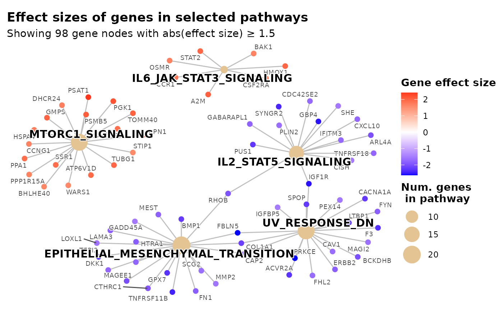
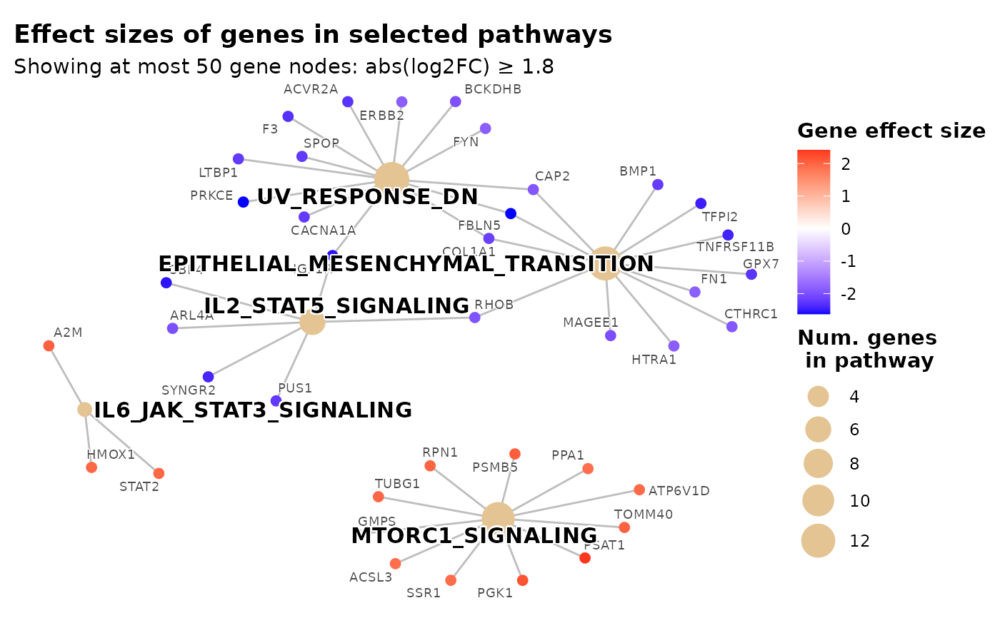
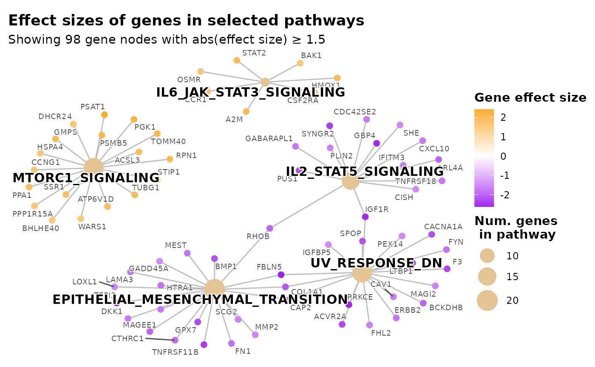
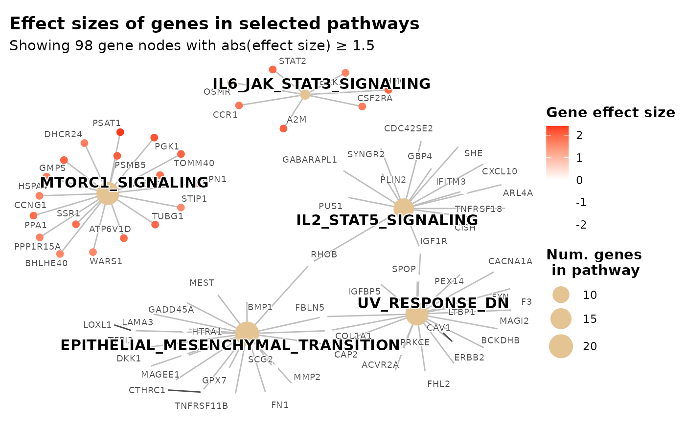
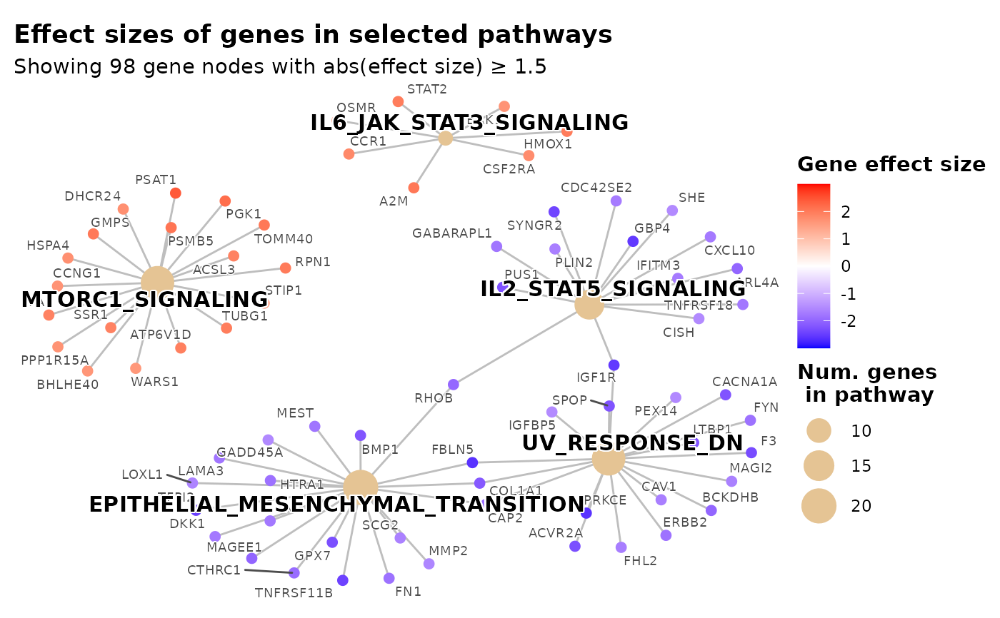
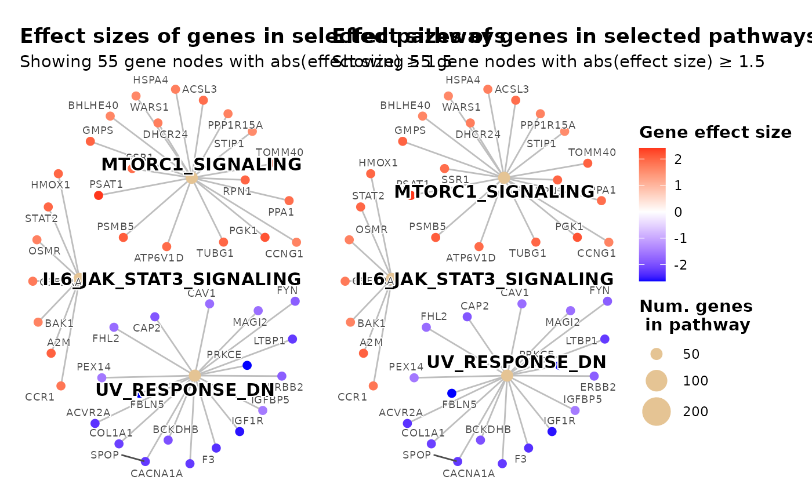
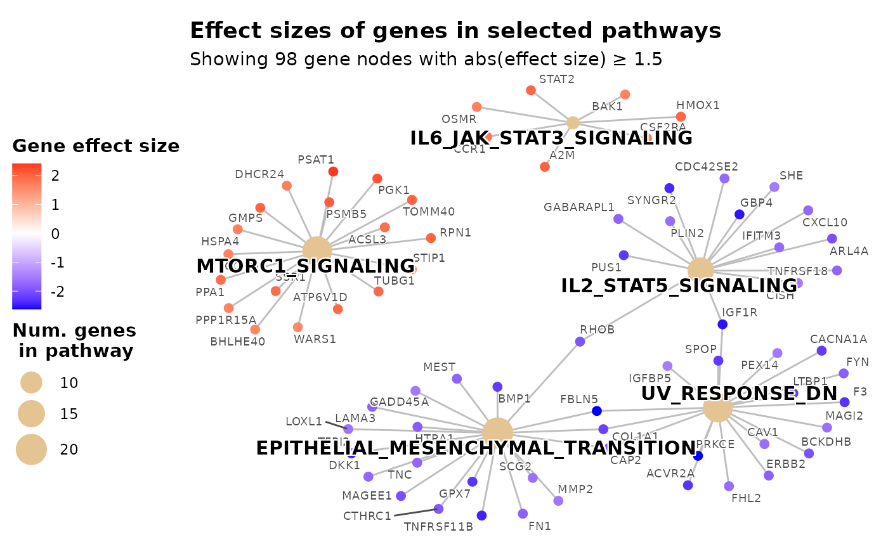
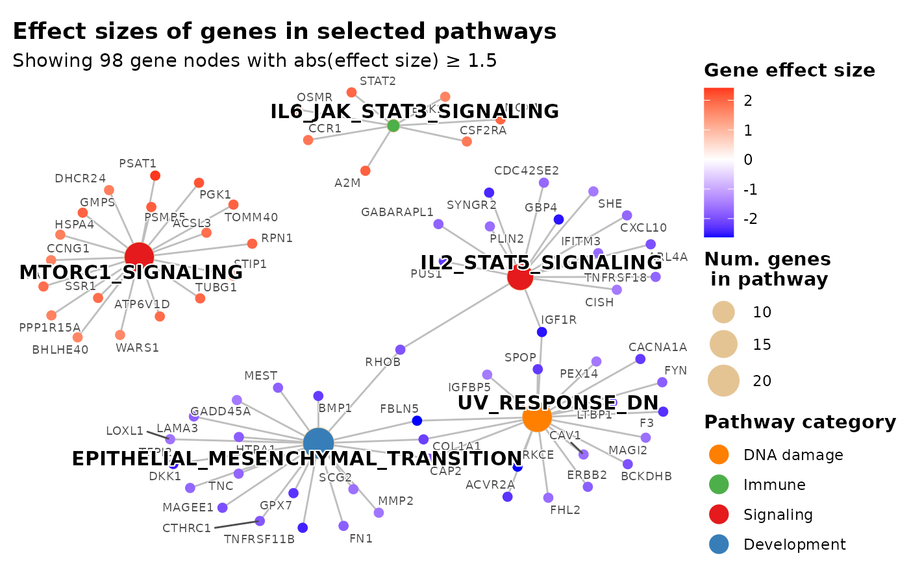

Visualises the top GSEA pathways as a bipartite network where pathway nodes
are connected to their constituent gene nodes. Gene nodes are colored by
the gene-level statistic used for GSEA (e.g. log2 fold change). Node
proximity reflects shared pathway membership (network layout), not
gene–gene correlation — see plot_pathway_correlation_network() for
co-expression structure.
Usage
plot_pathways(
gsea_result,
effect_size,
show_pathways = 5,
effect_size_threshold = 0,
subtitle_effect_size_label = "effect size",
max_genes_shown = NULL,
gene_node_size = 0.7,
line_size = 0.5,
pathway_color = "black",
pathway_label_size = 4,
pathway_cats = NULL,
pathway_cat_colors = NULL,
legend_pathway_fill_title = "Pathway category",
legend_pathway_fill_dot_size = 5,
gene_color = "grey30",
gene_label_size = 2.5,
title = "Effect sizes of genes in selected pathways",
legend_pathway_size_title = "Num. genes\n in pathway",
legend_fixed_dot_size = NULL,
legend_color_title = "Gene effect size",
colorkey_breaks = NULL,
colorkey_limits = NULL,
color_low = "blue",
color_mid = "white",
color_high = "red",
plot_margin = c(0.5, 0.5, 0.5, 0.5),
legend_position = "right"
)Arguments
- gsea_result
A
gseaResultobject returned byrun_gsea()orclusterProfiler::GSEA().- effect_size
named numeric vector. Gene-level statistics used to color gene nodes (e.g. log2 fold change, t-statistic). Names must be gene symbols matching those in
gsea_result. Typically thegene_vecelement returned byrun_gsea().- show_pathways
integer(1) Number of top pathways to display (default
5). Must be a single positive whole number.- effect_size_threshold
numeric(1) Only show gene nodes whose
abs(effect_size) >= effect_size_threshold(default0). Set to0to show all genes. Must be a single finite non-negative value.- subtitle_effect_size_label
character(1) String placed inside
abs()in the auto-generated subtitle when a threshold is applied (default"effect size"). Change to match your effect-size metric, e.g."log2FC","t-statistic", or"z-score".- max_genes_shown
integer(1) Maximum number of gene nodes to display (default
NULL, no limit). If the number of genes belonging to the topshow_pathwayspathways and passingeffect_size_thresholdexceeds this value, the threshold is raised adaptively (via quantile ofabs(effect_size)among pathway genes) until at mostmax_genes_showngenes remain. The effective threshold will never drop beloweffect_size_threshold. Must be a single positive whole number.- gene_node_size
numeric(1) Relative size of gene circles/nodes (default
0.7). Must be a single positive value.- line_size
numeric(1) Relative thickness of edges (default
0.5). Must be a single positive value.- pathway_color
character(1) Color of pathway label text (default
"black").- pathway_label_size
numeric(1) Font size of pathway labels (default
4). Must be a single positive value.- pathway_cats
named character vector or
NULL(defaultNULL). Optionally maps pathway IDs to a biological process category name (e.g.c(MTORC1_SIGNALING = "Signaling", UV_RESPONSE_DN = "DNA damage")). Partial mappings are allowed: only pathway nodes whose IDs appear innames(pathway_cats)receive a category fill color; any displayed pathway not present innames(pathway_cats)is left unfilled (transparent overlay). Must be used together withpathway_cat_colors.data(hallmark_pathway_categories)provides a ready-to-use term-to-category mapping for MSigDB Hallmark gene sets.- pathway_cat_colors
named character vector or
NULL(defaultNULL). Maps each category name to a color string (hex or named R color), e.g.c(Signaling = "#e41a1c", "DNA damage" = "#ff7f00"). Must cover every category value that appears inpathway_cats. Node shape is set to21(filled circle with border) sofillandcolourremain independent aesthetics — the gene fold-change gradient oncolouris unaffected. Must be used together withpathway_cats.- legend_pathway_fill_title
character(1) or
NULL. Title for the pathway-fill legend whenpathway_catsis non-NULL(default"Pathway category"). Set toNULLfor no legend title.- legend_pathway_fill_dot_size
numeric(1) Size of the dot/point keys in the pathway-category fill legend (default
5). Increase this value if the colored dots in the legend appear too small. Must be a single positive numeric value. Ignored whenpathway_catsisNULL.- gene_color
character(1) Color of gene label text (default
"grey30").- gene_label_size
numeric(1) Font size of gene labels (default
2.5). Must be a single positive value.- title
character(1) Plot title (default
"Effect sizes of genes in selected pathways").- legend_pathway_size_title
character(1) Title for the node-size legend (default
"Num. genes\n in pathway"). Set toNULLto show the legend without a title.- legend_fixed_dot_size
numeric vector of gene-count values whose dot sizes should appear as keys in the size legend (default
NULL, automatic). For example,c(50, 100, 200)causes exactly those three dot sizes to be shown. The supplied values also become the scale limits (using their range), so the visual size mapping is identical across multiple plots combined withpatchwork. Values outside the range are squished to the nearest extreme rather than dropped. All values must be finite and positive.- legend_color_title
character(1) or expression() Title for the color scale legend (default
"Gene effect size"). Set toNULLto show the legend without a title. Useexpression()to supply plotmath expressions.- colorkey_breaks
numeric vector of values at which tick marks and labels are drawn on the color legend (default
NULL, automatic). For example,c(-2, -1, 0, 1, 2)to show five labeled ticks. When supplied without anycolor_*arguments, the existing cnetplot palette is preserved and only the break positions are updated.- colorkey_limits
numeric vector of length 2 giving the lower and upper bounds of the color scale (default
NULL, automatic). Values outside this range are mapped to the nearest extreme color. Most useful together withcolorkey_breaks. Likecolorkey_breaks, this preserves the cnetplot palette when nocolor_*arguments are set.- color_low
character(1) Color for the low end of the scale (default
"blue"). Combine withcolor_highfor a 2-color sequential scale, or also setcolor_midfor a 3-color diverging scale. Set toNULLto use cnetplot's default palette (only when nocolor_*arguments are specified).- color_mid
character(1) Color for the midpoint of the scale (default
"white"). When non-NULL, a 3-color divergingggplot2::scale_color_gradient2()is used. Set toNULLto use a 2-colorggplot2::scale_color_gradient()whencolor_loworcolor_highare set. To restore cnetplot's original palette, set allcolor_*arguments toNULL.- color_high
character(1) Color for the high end of the scale (default
"red"). Set toNULL(withcolor_lowandcolor_midalsoNULL) to use cnetplot's default palette.- plot_margin
numeric vector of length 4 giving the plot margin in lines:
c(top, right, bottom, left)(defaultc(0.5, 0.5, 0.5, 0.5)). All values must be finite and non-negative. Increase the left/right values if node labels are being clipped at the edges.- legend_position
character(1) Position of the legend (default
"right"). Passed toggplot2::theme(legend.position = ...). Common values include"right","left","top","bottom", or"none"to hide the legend.
Examples
ggplot2::theme_set(theme_bw2())
# hallmark_t2g is bundled with the package (columns: term, gene)
data(hallmark_t2g)
set.seed(1)
all_genes <- unique(hallmark_t2g$gene)
gene_vec <- setNames(rnorm(length(all_genes)), all_genes)
res <- run_gsea(gene_vec, term2gene = hallmark_t2g)
# Basic usage
plot_pathways(
gsea_result = res$gsea_result,
effect_size = res$gene_vec,
show_pathways = 5,
effect_size_threshold = 1.5
)
#> Scale for colour is already present.
#> Adding another scale for colour, which will replace the existing scale.

# Adaptively cap gene nodes at 50: effect_size_threshold is raised automatically
# so at most 50 genes appear; the subtitle reports the effective threshold used
plot_pathways(
gsea_result = res$gsea_result,
effect_size = res$gene_vec,
show_pathways = 5,
max_genes_shown = 50,
subtitle_effect_size_label = "log2FC"
)
#> Scale for colour is already present.
#> Adding another scale for colour, which will replace the existing scale.

# 3-color diverging scale (purple -> white -> orange)
plot_pathways(
gsea_result = res$gsea_result,
effect_size = res$gene_vec,
show_pathways = 5,
color_low = "purple",
color_mid = "white",
color_high = "orange",
effect_size_threshold = 1.5
)
#> Scale for colour is already present.
#> Adding another scale for colour, which will replace the existing scale.

# 2-color sequential scale (white -> red)
plot_pathways(
gsea_result = res$gsea_result,
effect_size = res$gene_vec,
show_pathways = 5,
color_low = "white",
color_high = "red",
effect_size_threshold = 1.5
)
#> Scale for colour is already present.
#> Adding another scale for colour, which will replace the existing scale.

# Custom colors with explicit breaks and limits
plot_pathways(
gsea_result = res$gsea_result,
effect_size = res$gene_vec,
show_pathways = 5,
color_low = "blue",
color_mid = "white",
color_high = "red",
colorkey_breaks = c(-2, -1, 0, 1, 2),
colorkey_limits = c(-3, 3),
effect_size_threshold = 1.5
)
#> Scale for colour is already present.
#> Adding another scale for colour, which will replace the existing scale.

# Two plots with a shared dot-size legend for use with patchwork.
# Both plots use the same legend_fixed_dot_size so the size keys are
# identical across panels, making visual comparisons meaningful.
shared_dot_sizes <- c(50, 100, 200)
p1 <- plot_pathways(
gsea_result = res$gsea_result,
effect_size = res$gene_vec,
show_pathways = 3,
legend_fixed_dot_size = shared_dot_sizes,
effect_size_threshold = 1.5
)
#> Scale for colour is already present.
#> Adding another scale for colour, which will replace the existing scale.
p2 <- plot_pathways(
gsea_result = res$gsea_result,
effect_size = res$gene_vec,
show_pathways = 3,
legend_fixed_dot_size = shared_dot_sizes,
effect_size_threshold = 1.5
)
#> Scale for colour is already present.
#> Adding another scale for colour, which will replace the existing scale.
patchwork::wrap_plots(p1, p2, guides = "collect")

# Move legend to the left side
plot_pathways(
gsea_result = res$gsea_result,
effect_size = res$gene_vec,
show_pathways = 5,
legend_position = "left",
effect_size_threshold = 1.5
)
#> Scale for colour is already present.
#> Adding another scale for colour, which will replace the existing scale.

# Color pathway nodes by biological process category using hallmark_pathway_categories
data(hallmark_pathway_categories)
top_ids <- utils::head(res$gsea_result@result$ID, 5)
# Look up the process category for each displayed pathway
pathway_cats <- setNames(
hallmark_pathway_categories$process_category[
match(top_ids, hallmark_pathway_categories$term)
],
top_ids
)
# One color per category; covers all eight Hallmark categories
cat_palette <- c(
Signaling = "#e41a1c", Development = "#377eb8", Immune = "#4daf4a",
Metabolic = "#984ea3", "DNA damage" = "#ff7f00", Proliferation = "#a65628",
"Cellular component" = "#f781bf", Pathway = "#999999"
)
plot_pathways(
gsea_result = res$gsea_result,
effect_size = res$gene_vec,
show_pathways = 5,
pathway_cats = pathway_cats,
pathway_cat_colors = cat_palette,
legend_pathway_fill_title = "Pathway category",
effect_size_threshold = 1.5
)
#> Scale for colour is already present.
#> Adding another scale for colour, which will replace the existing scale.
